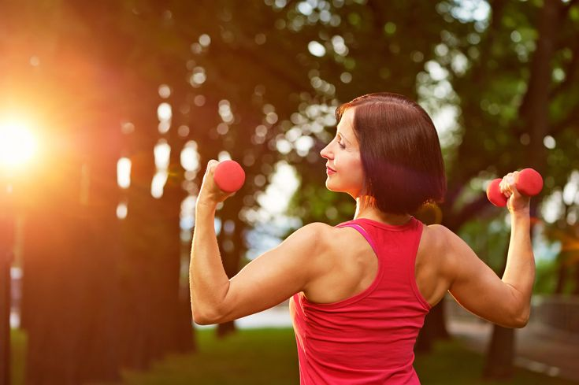
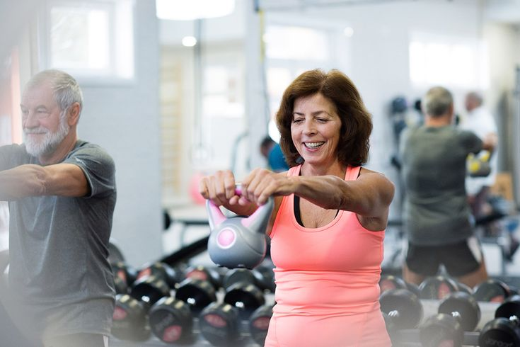

Exercise that employs your body's large muscular groups is called aerobic exercise. Typically, this kind of workout is repeated and rhythmic. Your workout's intensity or how hard your body works during this kind of exercise may be changed. It takes a long period, often ten minutes or more, but its typically only moderately intense. A strategy of exercise for improving the body's capacity to absorb and use oxygen was established in 1968 by the best-selling book Aerobics. Today, aerobics sessions, which frequently imitate outdoor activity, are held every afternoon in hundreds of gyms and YMCAs across the nation. In addition to strengthening the heart and lungs, aerobic exercise often has many other positive consequences. In order to break down living stuff and restore it to the soil, aerobic bacteria which require oxygen to survive are necessary.
The Differences Between Aerobics & Anaerobics
The phrases "aerobic" and "anaerobic" describe the two ways your body generates energy.
Aerobic translates to "with oxygen". Your cells use oxygen to create energy when you engage in a continuous activity that raises your heart rate. Walking is one example of aerobic exercise.
Anaerobic means "without oxygen,". During a brief, intense exercise, your cells are not using oxygen to generate energy. Lifting weights is an example of an anaerobic activity. They are performed at maximum effort for a short time.
Continue reading to find out more about aerobic workouts you may do at the gym or at home. Additionally, never start an aerobic exercise program without consulting a healthcare professional.
Walking
Jogging
Running
Cycling
Swimming
Dancing
You can enjoy aerobic exercise even if you're not outside. Numerous workout equipment, including ellipticals, stair steppers, and treadmills, encourage aerobic activity.
Weight Training
We all need to build and retain muscle, especially as we become older. The sooner we begin, the better. The American Council on Exercise reports that beginning about age 30, most individuals lose over half a pound of muscle per year, primarily as a result of not being as active as they were in their younger years. Weight gain and the associated health problems might result from losing muscle at the same time as metabolism slows down. Additionally, developing larger muscles isn't only for show. Strength training prevents bone loss and can even help create new bone, according to the Mayo Clinic. It also helps with weight control.


Beginner's Workout
This is a beginner-friendly workout. At least two half-hour sessions each week are sufficient.
For the first four weeks, begin with a single set of eight to twelve repetitions (reps). Keep in mind that the final two or three repetitions should be really challenging when selecting weight.
For the following four weeks, increase to 12 to 15 reps.
Use a higher weight or add a second set of reps (doing the same number of reps per set) after 15 reps are effortless.
As you perform these exercises, remember to take deep breaths. During the intensity portion of the motion, often known as the "lifting" phase, always release your breath.
Yoga
Yoga is a physical and mental discipline that may increase flexibility and strength. It could also reduce tension and assist control discomfort. Different forms of yoga use meditation, breathing exercises, and physical postures. Yoga is an ancient discipline that involves physical postures, focus, and deep breathing. Yoga can help you develop your strength, flexibility, tranquility, endurance, and general well-being.
How frequently should you do yoga to lose weight ?
At least 3 to 5 times a week, try to do more physically active yoga for at least an hour. On other days, mix it up with a gentler, more restorative class. Hatha, Yin and restorative yoga classes are excellent choices. If you're a beginner, start out slowly. You can start with a 20-minute practice and work your way up from there. Give yourself one full day off each week. For added cardiovascular benefits, mix your yoga practice with exercises like swimming, cycling, or walking.
Check out this video to learn some amazing yoga techniques !